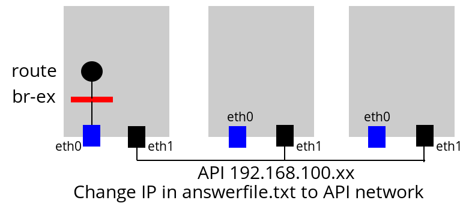

บทที่ 3 ติดตั้ง Openstack¶
3.1 เตรียมพร้อมเอกสาร¶
1 2 3 4 5 6 7 8 9 10 | pip install tox
git clone https://github.com/openstack/openstack-manuals
cd openstack-manuals
tox -e docs
ls doc
admin-guide-cloud arch-design-draft common contributor-guide image-guide networking-guide user-guide
arch-design cli-reference config-reference glossary install-guide pom.xml user-guide-admin
cd doc/install-guide/build-rdo/htmldoc/install-guide/build-rdo/html
python -m SimpleHTTPServer
|
เปิด brower ไปยัง port 8000

3.2 ติดตั้ง Openstack ด้วย RDO (Single Node allinone)¶
สร้าง Project Folder
1 2 3 | mkdir ~/Vagrant
cd ~/Vagrant
touch Vagrantfile
|
Vagrantfile
1 2 3 4 5 6 7 8 9 10 11 12 13 14 | # -*- mode: ruby -*-
# vi: set ft=ruby :
Vagrant.configure(2) do |config|
config.vm.box = "centos/7"
config.vm.define :rdo do |c|
c.vm.hostname = "rdo.example.com"
c.vm.provider :libvirt do |d|
d.memory = 4096
d.cpus = 2
d.nested = true
end
end
end
|
vagrant up
1 2 3 4 | vagrant plugin install vagrant-libvirt
vagrant up --provider libvirt
vagrant ssh
sudo su -
|
vagrant user มีสิทธิ sudo และ มี password vagrant หากไม่การกำหนด private network จะทำให้
vm ที่สร้างขึ้นมานั้นจะได้รับค่าเป็น Default network เสมอ และนอกจากนั้น vagrant จะทำการ mount
file system ภายในและภายนอก Rsyncing folder: /home/admin/Vagrant/rdo/ => /home/vagrant/sync
ตั้งค่า selinux ให้เป็น permissive
1 2 3 4 5 | yum install vim
setenforce 0
vim /etc/sysconfig/selinux
SELINUX=permissive
|
กำหนดให้ใช้ network แทน NetworkManager
1 2 3 4 | systemctl start network
systemctl enable network
systemctl stop NetworkManager
systemctl disable NetworkManager
|
ติดตั้ง Repo
1 2 3 4 5 6 7 | yum install -y epel-release
yum install -y https://www.rdoproject.org/repos/rdo-release.rpm-y https://www.rdoproject.org/repos/rdo-release.rpm
yum install openstack-packstack
packstack --gen-answer-file packstack-answerfile.txt
packstack --answer-file packstack-answerfile.txt
|
การปรับแต่ค่าใน answerfile จะใช้คำสั่ง grep -n [keyword] file เพื่อสะดวกในการดึงข้อมูล
และใช้ vim file +[หมายเลขบรรทัด] เพื่อให้ vim เปิด file ตามที่ต้องการ
1 2 3 4 5 6 | wc -l packstack-answerfile.txt
grep -n INSTALL packstack-answerfile.txt
grep -n HOST packstack-answerfile.txt
grep -n CINDER packstack-answerfile.txt
grep -n HEAT packstack-answerfile.txt
grep -n NTP packstack-answerfile.txt
|
Note
- NTP ใช้
- 3.th.pool.ntp.org3.th.pool.ntp.org
- 0.asia.pool.ntp.org0.asia.pool.ntp.org
- 2.asia.pool.ntp.org2.asia.pool.ntp.org
หัวใจสำคัญคือ puppet module
3.3 ติดตั้ง Openstack ด้วย RDO Multinode¶
่ทดสอบด้วยการสร้าง ด้วย rdo ก่อนจะทำบนเครื่องจริง โดย มีarchitecture
สร้างระบบด้วย vagrant file ด้วยการสร้าง ไฟล์ ชื่อ Vagrantfile และ password.sh
1 2 3 | mkdir project
cd project
touch Vagrantfile
|
เนื้อหาใน Vagrantfile เป็นการสร้าง node ขึ้นมาจำนวน 3 โหนด คือ controller, compute1, network
1 2 3 4 5 6 7 8 9 10 11 12 13 14 15 16 17 18 19 20 21 22 23 24 25 26 27 28 29 30 31 32 33 34 35 36 37 38 39 40 41 42 43 44 45 46 47 48 49 50 51 52 53 54 55 56 57 58 59 60 61 62 63 64 65 66 67 68 69 70 71 72 73 74 75 76 77 78 79 80 81 82 83 84 85 86 87 88 89 90 91 92 93 94 95 96 97 98 99 100 101 | # -*- mode: ruby -*-
# vi: set ft=ruby :
MGN_NETWORK="10.0.0"
TUNNEL_NETWORK="10.0.1"
EXTERNAL_NETWORK="203.0.113"
Vagrant.configure(2) do |config|
config.vm.box = "centos/7"
# controller vm
config.vm.define :controller do |c|
c.vm.hostname = "controller.example.com"
c.vm.provider :libvirt do |d|
d.memory = 1024
d.cpus = 1
d.nested = true
end
c.vm.synced_folder ".", "/vagrant", type: "rsync"
#eth1, API NETWORK will be the management endpoint
c.vm.network :private_network, ip: "#{MGN_NETWORK}.11", netmask: "255.255.255.0"
# yum update
c.vm.provision "shell", inline: <<-EOF
source /vagrant/password.sh
echo root:stack | chpasswd
yum -y install epel-release
yum -y install http://rdo.fedorapeople.org/openstack-kilo/rdo-release-kilo.rpm
yum -y install openstack-selinux
cat <<- HOST >> /etc/hosts
10.0.0.11 controller.example.com controller
10.0.0.21 network.example.com network
10.0.0.31 compute1.example.com compute1
HOST
EOF
end
#network vm
config.vm.define :network do |c|
c.vm.hostname = "network.example.com"
c.vm.provider :libvirt do |d|
d.memory = 1024
d.cpus = 1
d.nested = true
end
c.vm.synced_folder ".", "/vagrant", type: "rsync"
#eth1, API NETWORK will be the management endpoint
c.vm.network :private_network, ip: "#{MGN_NETWORK}.21", netmask: "255.255.255.0"
#eth2, API NETWORK will be the management endpoint
c.vm.network :private_network, ip: "#{TUNNEL_NETWORK}.21", netmask: "255.255.255.0"
#eth3, API NETWORK will be the management endpoint
c.vm.network :private_network, ip: "#{EXTERNAL_NETWORK}.21", netmask: "255.255.255.0"
# yum update
c.vm.provision "shell", inline: <<-EOF
source /vagrant/password.sh
echo root:stack | chpasswd
yum -y install epel-release
yum -y install http://rdo.fedorapeople.org/openstack-kilo/rdo-release-kilo.rpm
yum -y install openstack-selinux
cat <<- HOST >> /etc/hosts
10.0.0.11 controller.example.com controller
10.0.0.21 network.example.com network
10.0.0.31 compute1.example.com compute1
HOST
EOF
end
#compute1 vm
config.vm.define :compute1 do |c|
c.vm.hostname = "compute1.example.com"
c.vm.provider :libvirt do |d|
d.memory = 1024
d.cpus = 1
d.nested = true
end
c.vm.synced_folder ".", "/vagrant", type: "rsync"
#eth1, API NETWORK will be the management endpoint
c.vm.network :private_network, ip: "#{MGN_NETWORK}.31", netmask: "255.255.255.0"
#eth2, API NETWORK will be the management endpoint
c.vm.network :private_network, ip: "#{TUNNEL_NETWORK}.31", netmask: "255.255.255.0"
# yum update
c.vm.provision "shell", inline: <<-EOF
source /vagrant/password.sh
echo root:stack | chpasswd
yum -y install epel-release
yum -y install http://rdo.fedorapeople.org/openstack-kilo/rdo-release-kilo.rpm
yum -y install openstack-selinux
cat <<- HOST >> /etc/hosts
10.0.0.11 controller.example.com controller
10.0.0.21 network.example.com network
10.0.0.31 compute1.example.com compute1
HOST
EOF
end
end
|